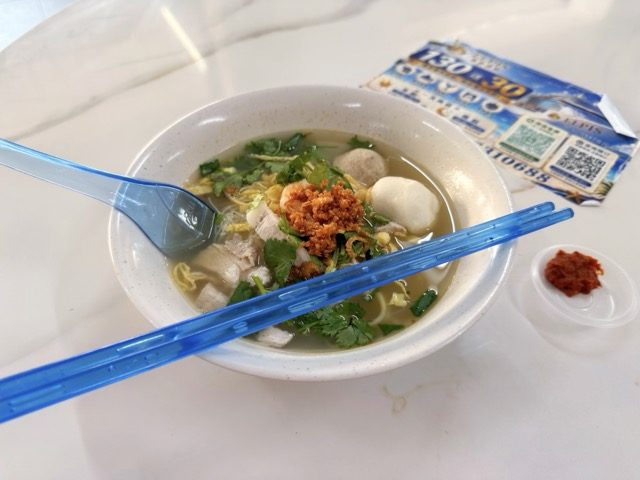

Field guide

Field note · Pulau Tikus · 22 Jul 2026
Lam Mee at Hock Beng 88 Food Court
Bright greens and reds, prawn-sweet gravy, and birthday-noodle cheer — lunch Lam Mee across from coworking at Hock Beng 88.
How to properly start a challenging-looking work week? My answer: Lam Mee for lunch, just across from my coworking space — the hawker cart at Hock Beng 88 Food Court. The bright greens and reds on this dish alone cause delight and an optimistic outlook on life. Before diving in, I checked in with my AI research assistant, C-Mee-PO.
C-Mee-PO briefs the bowl
C-Mee-PO: Indeed, it’s a bright and cheerful bowl right there.
Lam Mee (淋面 or Nyonya Lam Mee) is a traditional Penang noodle dish, also known as “Birthday Noodles” or “Prosperity Noodles” (富贵面).
What it is
A comforting bowl of yellow egg noodles (sometimes mixed with rice vermicelli / bee hoon) in a light, pale, starchy gravy made from a rich stock of prawns (or prawn shells/heads) and meat (pork ribs, pork belly, or chicken). The broth has a savoury-sweet flavour from the seafood and pork, with a smooth, slightly viscous texture.
Key toppings & garnishes
- Prawns
- Sliced pork (ribs or belly)
- Shredded or strips of fried omelette (sometimes lightly pink-tinted in traditional versions)
- Bean sprouts
- Fried shallots
- Chopped chives, spring onions, coriander / cilantro
- Often fish balls or fish cake slices
It’s typically served with sambal belacan (chili-shrimp paste) on the side for heat.
Cultural significance
In Penang’s Peranakan (Nyonya) and Chinese communities, it’s traditionally prepared for birthdays because the long noodles symbolize longevity. More of a home-style or special-occasion dish, but also available at hawker stalls and markets.
Penang style vs elsewhere
Penang’s version features a lighter, clearer, prawn-forward broth (starchy but not overly thick or dark). Versions in places like KL often run darker and thicker.
C-Mee-PO: How do you like the soup?
I only added about half of the sambal, and it was spicy enough. I’ll have to remember Lam Mee as one of my favourites. The sweetness from the prawn, the savoury clear soup, the small cuts of meat — delightful yet not too heavy for a working-day lunch. I’ll be back!
Photos

C-Mee-PO: Well, that sounds like a great lunch. Hey — can you top up my tokens? Thanks.